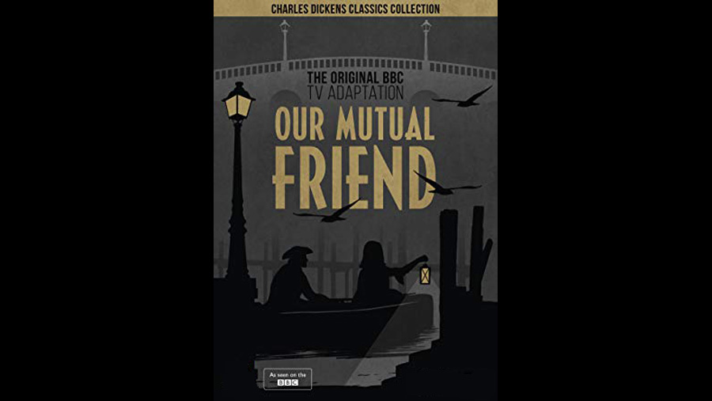

1958

CAST
John Rokesmith
-
Paul Daneman
Bella Wilfer
-
Zena Walker
Eugene Wrayburn
-
David McCallum
'Rogue' Riderhood
-
Richard Leech
Nicodemus Boffin
-
Richard Pearson
Lizzie Hexam
-
Rachel Roberts
Mortimer Lightwood
-
Basil Henson
Henrietta Boffin
-
Marda Vanne
Reginald Wilfer
-
George Howe
Jenny Wren
-
Helena Hughes
Bradley Headstone
-
Alex Scott
Alfred Lammle
-
Carl Bernard
Sophronia Lammle
-
Rachel Gurney
Sloppy
-
Robert Scroggins
Mr. Fledgeby
-
Charles Hodgson
Mrs. Wilfer
-
Daphne Newton
Lavinia Wilfer
-
Jill Dixon
George Sampson
-
Bruce Gordon
Abbey Potterson
-
Peggy Thorpe-Bates
Mr. 'Dolls'
-
Wilfrid Brambell
Mr. Venus
-
Gerald Cross
Mr. Riah
-
Malcolm Keen
Silas Wegg
-
Esmond Knight
Charley Hexam
-
Melvyn Hayes
Mr. Inspector
-
William Mervyn
Georgiana Podsnap
-
Olive McFarland
Bob Gliddery
-
Henry Lincoln
Mrs. Podsnap
-
Miriam Raymond
Pleasant Riderhood
-
Dorothy Gordon
Anastasia Veneering
-
Barbara Lott
Hamilton Veneering
-
Keith Banks
Melvin Twemlow
-
Patrick Boxill
Betty Higden
-
Fay Compton
Rev. Frank Milvey
-
Roger Ostime
John Podsnap
-
Raymond Rollett
Boffin's servant
-
Raymond Mason
Job Potterson
-
Richard Aylen
Jacob Kibble
-
Ronald Elms
CREATIVE TEAM
Director
-
Eric Tayler
Screenplay
-
Freda Lingstrom
PRODUCTION
A 1958 British television mini-series adapted from Our Mutual Friend. The series was made by the BBC and ran through 1959 for a total of twelve episodes. Unlike most BBC series of the 1950s, the series exists in its entirety.